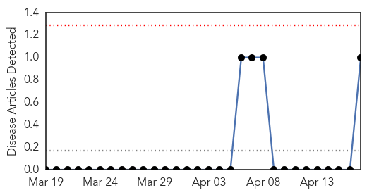
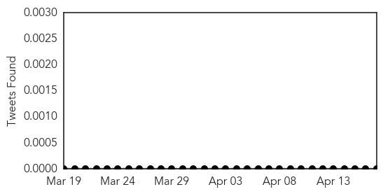
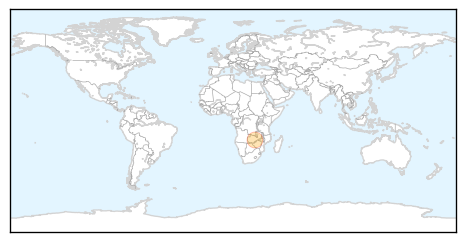
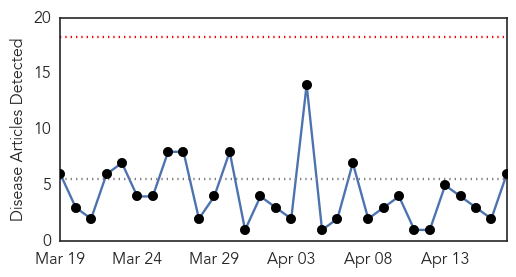

Bubonic Plague
30-Day Web Trend
0 alerts, 0 warnings

30-Day Twitter Trend
0 alerts, 0 warnings

Article Locations
Article Confidences

Top Articles:
Top Tweets:
-
No tweets found for Apr 17, 2015
Cholera
30-Day Web Trend
0 alerts, 0 warnings

30-Day Twitter Trend
0 alerts, 0 warnings

Article Locations

Article Confidences

Top Articles:
- 0.998
- Mozambique, Malawi, Zimbabwe: Cholera Situation (as of 15 April 2015) - Mozambique
- 0.996
- Early Haiti rains bring risk of bleak cholera season
- 0.993
- Cholera Kills 20 In Ebonyi
- 0.991
- Clean water is essential to preventing the return of cholera
- 0.802
- Mapping Genomes to Understand Contaminated Foods
- 0.500
- Kisumu set to battle cholera outbreak - Kenya
Top Tweets:
-
No tweets found for Apr 17, 2015